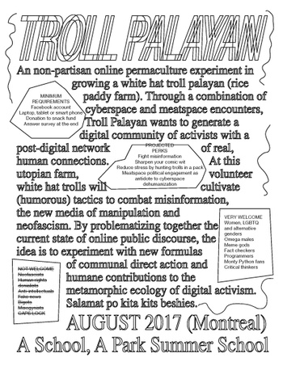
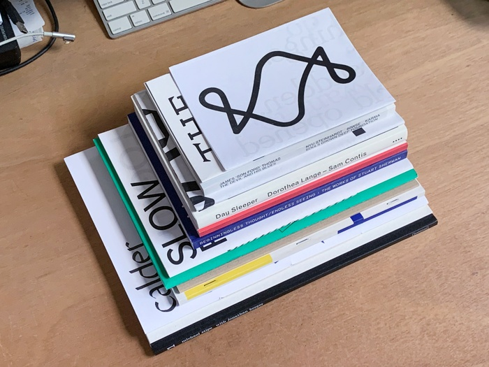
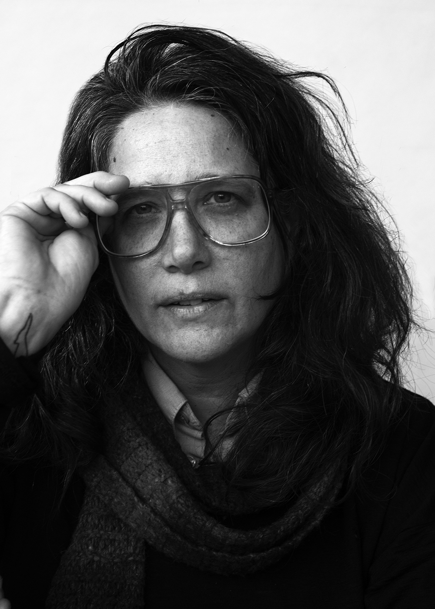
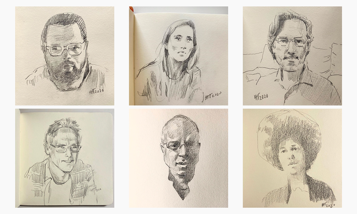

September 14, 2020
Graphic Design Announces Guest Speaker Series
Design for “A School, A Park,“ a graphic design summer school in Montreal, Canada created by Sean Yendrys, Graphic Design MFA’ 14, by Kristian Henson, Graphic Design MFA ‘12 and the first speaker in the series.
Continue Reading...July 15, 2020
Julian Bittiner Appointed Assistant Director Of Graphic Design Studies
A selection of publications by Senior Critic and Assistant Director of Graphic Design Studies Julian Bittiner.
Continue Reading...July 14,2020
A Message From Dean Kuzma
Dear Members of the School of Art Community,
I have had the honor to serve as the first woman Dean of the School of Art, and now to enter the fifth year of that term upon the 150th anniversary of the School of Art’s founding and its enrollment of the first women at Yale University. My experience has been enriching, given the opportunities to lead, to teach, and to befriend some of the most engaging and dynamic young artists—artists who will soon become colleagues, co-teachers, and, most likely, my mentors. . . . . . .
June 29, 2020
Anoka Faruqee And Meleko Mokgosi to be Sirectors of Graduate Studies in Painting/ Printmaking

The Yale School of Art is pleased to announce Professor Anoka Faruqee and Associate Professor Meleko Mokgosi as Co-directors of Graduate Studies in Painting /Printmaking.
Continue Reading...June 10, 2020
A.L. Steiner Appointed Assistant For Planning and Relations
Dean Marta Kuzma of the Yale School of Art announces the appointment of A.L. Steiner as Assistant Dean for Planning and Relations with the aim to foster increased collaboration amongst colleagues and students across all areas within the graduate and undergraduate programs
Continue Reading...June 9, 2020
Yale School of Art Launches "Speak To Me" Online Forum Organized with Claudia Rankine, Mart Kuzma, And Leah Mirakhor
The Yale School of Art’s Speak to Me series is an online forum with invited speakers, activists, writers, and artists organized with poet, playwright, author, and Frederick Iseman Professor of Poetry at Yale Claudia Rankine, Leah Mirakhor, Lecturer in Ethnicity . . . . . . . . .
Continue Reading...May 18, 2020
Congratulations To The Class of 2020
While this year’s in-person commencement exercises have been postponed, the Yale School of Art celebrates and applauds its graduating class of 2020.
Continue Reading...May 6, 2020
Photography Department Stages Prominent Virtual Lecture Series in Response To Remote Lerrning
A series of sketches of the guests of this pop up series by artist Eugene Gladun (@eugenegladun), done in real time during the talks over Zoom.
Continue Reading...April 17, 2020
Yale School Of Art Mourns Tel Passing Of William Bailey Alumnus

We are saddened to share the news with the School of Art community that William Bailey, distinguished alumnus, former dean and faculty member, as well as the Kingman Brewster Professor Emeritus of Art, passed away on April 13, 2020 at his home in Branford, Connecticut due to complications from an existing illness
Continue Reading...April 9, 2020
Yale School Of Art Faculty Danna Singer And A.L. Steiner named Guggenheim Fellows Along Side Three Alumni
The Yale School of Art is pleased to announce that faculty members Danna Singer and A.L. Steiner are among the 2020 Guggenheim Fellows named today by the John Simon Guggenheim Memorial Foundation. Three Yale School of Art alumni are also named among the 2020 Guggenheim Fellows: artists Leslie Hewitt, Gordon Ennis Moore, and Katy Schimert, whose graduating classes span from 1972 to 2004.
Continue Reading...March 21, 2020
A Message From Dean Kuzma
Dear MFA Students,
I hope that you are all well in the days leading up to our return from spring recess. I acknowledge the impact that moving to remote education has had on every member of our community and respect that this has not been an easy period of such rapid transition for anyone. Nevertheless, given the complications of social and professional life that the COVID-19 virus has imposed on our lives, we will begin with remote education on Monday, March 23rd. We are not living under normal conditions that allow us to continue with a studio-based practice, and so at this period of the pandemic remote education is the only alternative option.
March 12, 2020
All Yale School Of Art Public Events Cancelled or postponed Through April 5
Following Yale University guidance to implement preventative measures in response to the spread of COVID-19, the Yale School of Art has cancelled and postponed public events and programming scheduled through to at least April 5, 2020. The Yale School of Art will continue to assess the situation in response to Yale University’s guidance and will follow up with any information regarding rescheduling as soon as it becomes available.
Continue Reading...February 26, 2020
MAJOR BEQUEST TO ESTABLISH THE JACK STEWART SCHOLARSHIP ENDOWMENT FOR YALE SCHOOL OF ART
The Jack Stewart Scholarship Fund at the Yale School of Art will provide financial aid support for graduate students helping the most promising artists to enroll at Yale and pursue their passion upon graduation unburdened by debt.
Continue Reading...January 23, 2020
2020 MFA THESIS EXHIBITIONS ANNOUNCED
Yale School of Art hosts its annual MFA thesis exhibitions featuring work from all 2020 MFA degree candidates across the school’s four departments: painting/printmaking, sculpture, photography, and graphic design.
Continue Reading...November 11, 2020
2020 PRESIDENTIAL VISITING FELLOW IN FINE ARTS: MICKALENE THOMAS
Yale School of Art hosts its annual MFA thesis exhibitions featuring work from all 2020 MFA degree candidates across the school’s four departments: painting/printmaking, sculpture, photography, and graphic design.
Continue Reading...